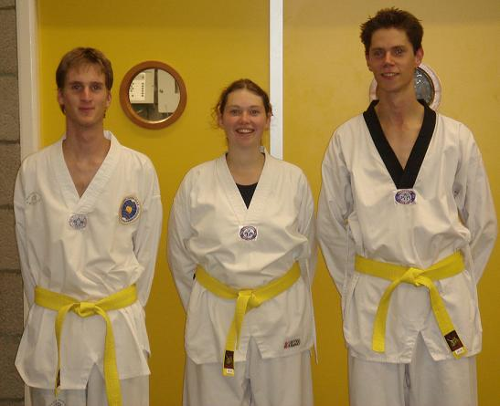
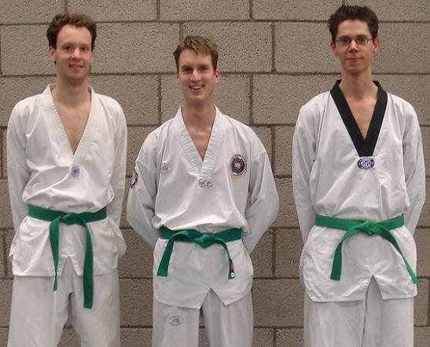

(left to right) Richard van den Hoven (secretary), Hoi Ying Chan (treasurer) and Merijn Donders (chairman)

(left to right) Ruud Hawinkels (secretary), Marieke Tjebbes (chairman) and Dorothee Wasserberg (treasurer)

(left to right) Martijn de Groot (chairman), Hanneke Vinke (treasurer) and Gertjan Groen (secretary)
(left to right) Bas Ploeger (treasurer), Martijn de Groot (chairman) and Gertjan Groen (secretary)
Mark van Domburg (treasurer), Tobi Maas (chairman) and Milan Marell (secretary)
Xixi Lu (treasurer), Alexander Janssen (chairman) and Mark Graus (secretary)
Laurens van der Bel (chairman), Shahriyar Nasrmalek (treasurer) and Jesse Joosten (secretary)
Roy Kraak (chairman), Ruizhou Xie (treasurer) and Wanda Bloemers (secretary)

Fleur Petit (activity supervisor), Sjors Turlings (treasurer), Melanie Ahn (chairman), and Arno van Lumig (secretary)